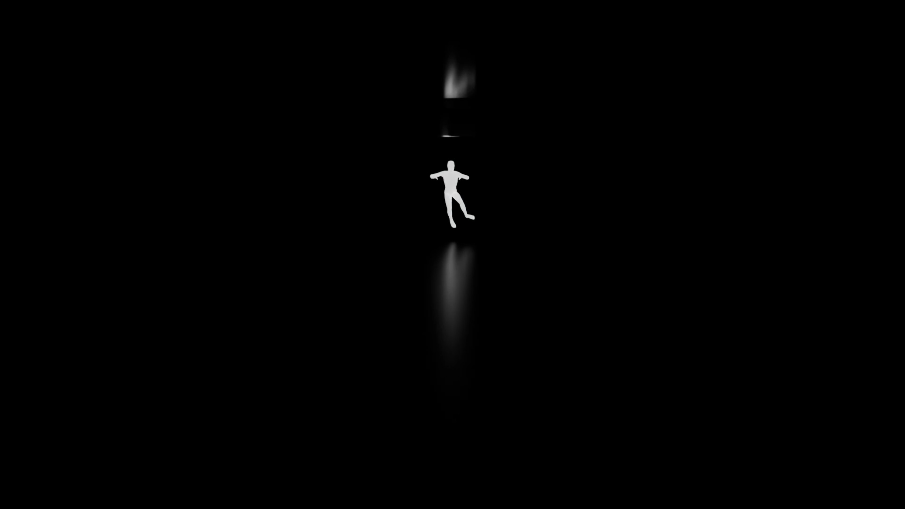
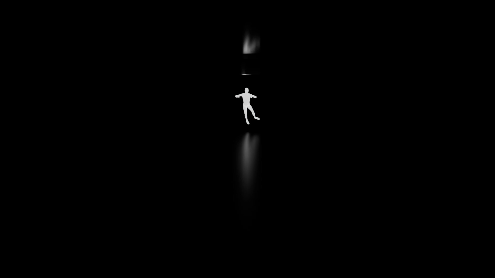

prisonnier de soi-même
description
Prisonnier de soi-même est un court-métrage d’animation 3D qui raconte l’histoire d’une personne dans le coma. Le film montre ce qu’elle ressent à l’intérieur de sa tête : la confusion, la peur et la sensation d’être perdue. Peu à peu, on voit qu’elle se noie dans ses pensées, symbolisant sa lutte pour reprendre le contrôle ou s’échapper de son esprit. Prisonnier de soi-même est une réflexion sur la solitude et le combat intérieur.


galerie
 
